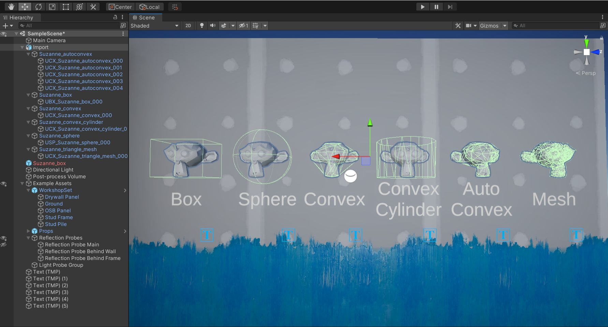
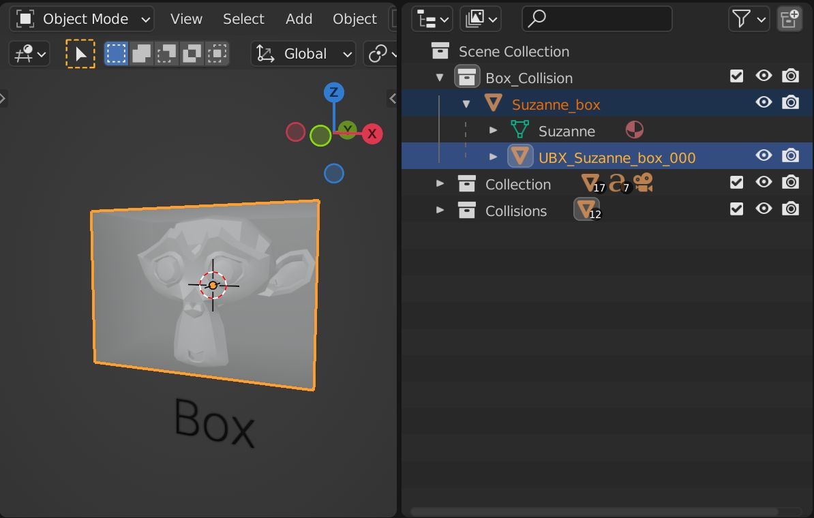
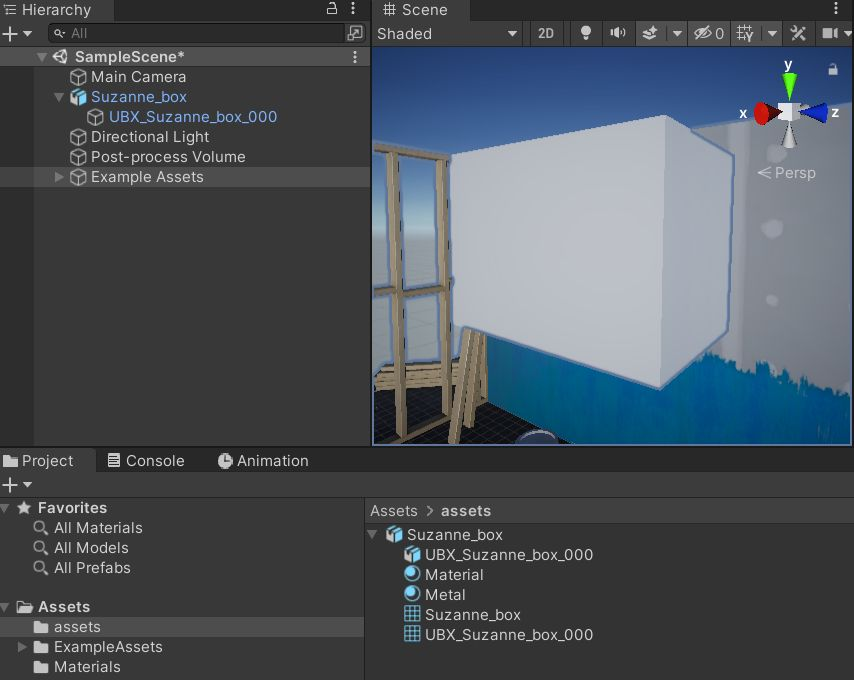
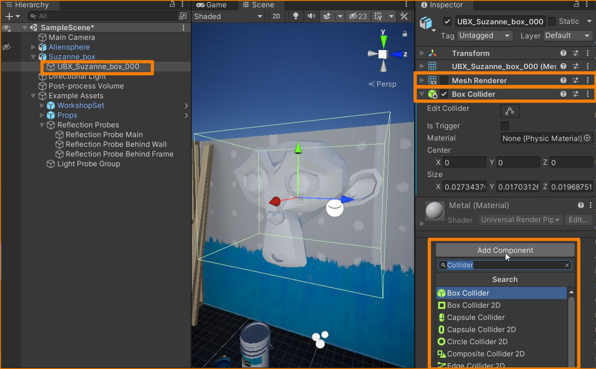
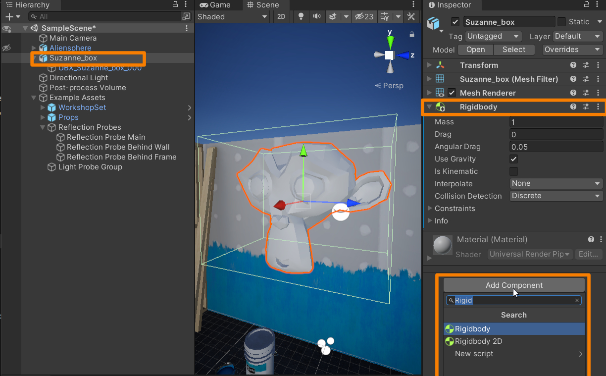
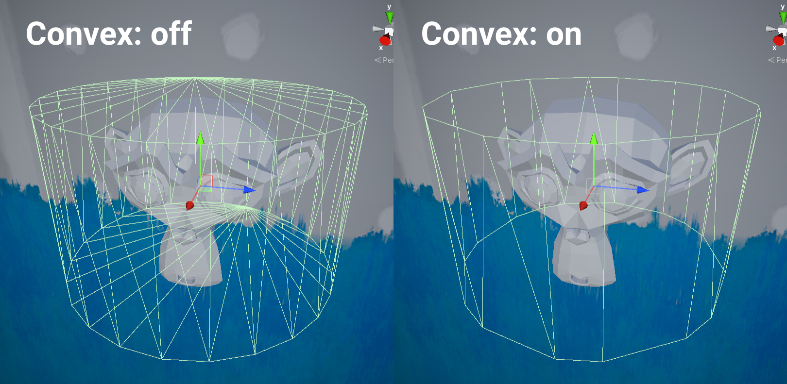
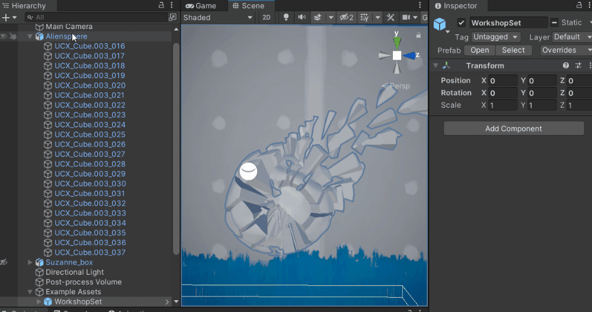

Unity Collider Setup
Getting colliders from Blender to Unity is straightforward. This guide covers the process and references relevant Unity documentation for more details on the physics system and collider usage.

Overview
For detailed information on collision setup in Unity, refer to the following resources:
Unity supports these Collider shapes relevant to this addon:
Note
Convex Colliders are managed through the Mesh Collider component. Check the Convex option in the Mesh Collider. Convex Mesh Colliders are limited to 255 triangles.
Setup
- No special setup or naming guidelines are required for exporting colliders to Unity. Configure them based on your project needs.

- Export the asset as an FBX, including all colliders.
- Import the asset into Unity using your usual export/import settings.
- Drag the asset into the scene. The colliders should be visible.

- Disable Mesh Renderer: Select all colliders in the Hierarchy, go to the Inspector, and uncheck Mesh Renderer.
- Add Collider Component: In the Inspector, click Add Component and select the appropriate Collider type (e.g., Box Collider).

- (Optional) Add Rigidbody: If the object is dynamic, add a Rigidbody component to the asset’s parent. Go to Inspector -> Add Component -> Rigidbody.

- (Optional) Physics Material: Assign Physics Materials to the colliders via the Material input in the Collider component. For more info, check the Unity Documentation: Physic Material.

Other Considerations

Warning
Unity may optimize Convex Mesh Collider geometry even if the triangle limit of 255 is not reached.
The image below shows a more complex setup. Only the parent contains a Rigidbody component, and all child colliders act as a compound collider. Unity supports multi-edit, allowing you to disable Mesh Renderer and assign the correct collider type to multiple colliders at once. Consistent naming helps streamline this process.
